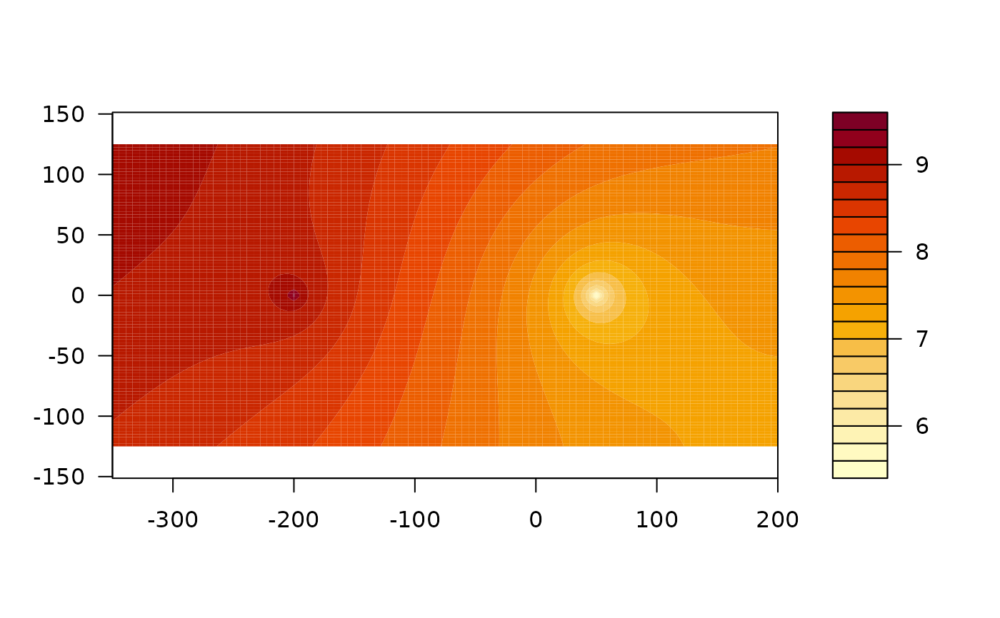
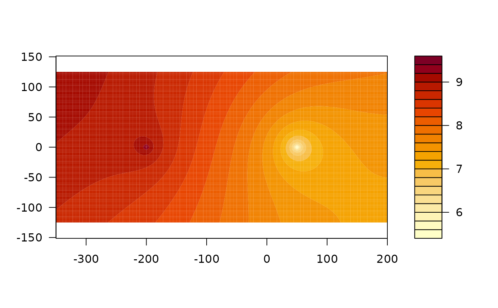

contours() creates a contour plot of a variable computed by the analytic element
model aem, or adds the contour lines to an existing plot.
Usage
contours(
aem,
x,
y,
variable = c("heads", "streamfunction", "potential"),
asp = 1,
...
)Arguments
- aem
aemobject- x
numeric x coordinates at which the values in
zare computed. These must be in ascending order.- y
numeric x coordinates at which the values in
zare computed. These must be in ascending order.- variable
character indicating which variable to plot. Possible values are
heads(default),streamfunctionandpotential.- asp
the
y/xaspect ratio, seeplot.window(). Defaults to 1 (equal unit lengths).- ...
additional arguments passed to
contour().
Details
contours() is a wrapper around contour(). It obtains the values of variable at
the supplied grid points and constructs the matrix supplied to contour() by reversing the rows and
transposing the matrix (see also the documentation of image()).
Examples
w <- well(xw = 50, yw = 0, Q = 200)
wi <- well(xw = -200, yw = 0, Q = -100)
uf <- uniformflow(gradient = 0.002, angle = -45, TR = 100)
rf <- constant(-1000, 0, hc = 10)
ml <- aem(k = 10, top = 10, base = 0, n = 0.2, w, wi, uf, rf)
xg <- seq(-350, 200, length = 100)
yg <- seq(-125, 125, length = 100)
contours(ml, xg, yg, nlevels = 20, col = 'dodgerblue', labcex = 1)
contours(ml, xg, yg, 'streamfunction', nlevels = 20, col = 'orange',
drawlabels = FALSE, add = TRUE)
# Not to be confused by contour()
try(
contour(ml, xg, yg, nlevels = 20, col = 'dodgerblue', labcex = 1)
)
#> Error in contour.default(ml, xg, yg, nlevels = 20, col = "dodgerblue", :
#> no proper 'z' matrix specified
# For image() or filled.contour()
library(graphics)
h <- heads(ml, xg, yg, as.grid = TRUE)
h_im <- t(h[dim(h)[1]:1,])
image(xg, yg, h_im, asp = 1)
contour(xg, yg, h_im, asp = 1, add = TRUE) # contours() is a wrapper for this
 filled.contour(xg, yg, h_im, asp = 1)

filled.contour(xg, yg, h_im, asp = 1)
